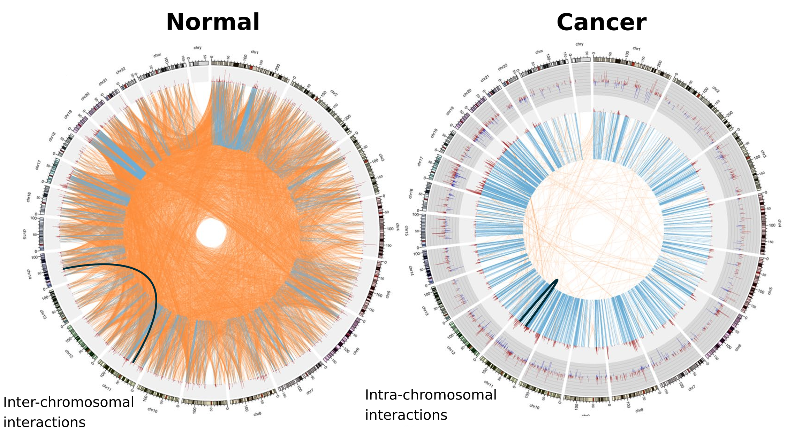
Espinal-Enríquez, J., Fresno, C., Anda-Jáuregui, G., & Hernández-Lemus, E. (2017).
RNA-Seq based genome-wide analysis reveals loss of inter-chromosomal regulation in breast cancer.
Scientific Reports, 7(1), 1–19.
- Las redes de co-expresión, inferidas de datos de RNA-seq nos permiten estudiar interacciones significativas en el transcriptoma.
- En cáncer de mama, observamos una pérdida de co-expresión inter-cromosómica:
-
Tejido sano: Interacciones entre genes de diferentes cromosomas.
-
Tejido de cáncer: Interacciones entre genes vecinos del mismo cromosoma.
Nos enfocamos en el transcriptoma porque:
-
Es el resultado medible de muchos mecanismos regulatorios.
-
Está asociado con la estructura y función celular.
-
Puede ser comparado entre diferentes fenotipos.
-
Existen datos públicamente disponibles.
Estudiamos relaciones de alta co-expresión
entre pares de genes porque:
-
Los genes pueden compartir mecanismos regulatorios.
-
Los genes pueden compartir algunas características funcionales.
-
Sin embargo, estas relaciones no representan interacciones físicas o regulatorias.
Utilizamos redes porque:
- Podemos estudiar conjuntos de genes conectados.
- Podemos enfocarnos en las interacciones.
- Podemos analizar patrones globales.
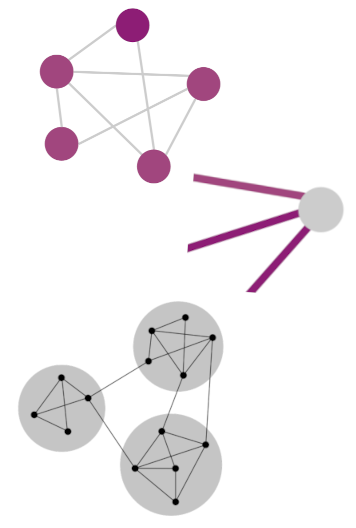
Si la regulación inter-cromosómica se pierde en
cáncer de mama. ¿Se pierde también en otros tipos de cáncer?
Metodología
| Tejido |
Muestras |
|
|
Normal |
Cancer |
| Vejiga |
19 |
398 |
| Cerebro* |
88 |
508 |
| Mama |
111 |
1047 |
| Colon* |
163 |
287 |
| Esófago* |
269 |
178 |
| Riñón |
123 |
839 |
| Hígado* |
107 |
358 |
| Pulmón |
101 |
995 |
| Ovario* |
88 |
413 |
| Páncreas* |
165 |
177 |
| Prostate* |
93 |
473 |
| Piel* |
231 |
88 |
| Testículo* |
162 |
138 |
| Tiroides |
56 |
471 |
| Útero |
35 |
591 |
En cáncer, las interacciones de co-expresión más fuertes son intra-cromosómicas
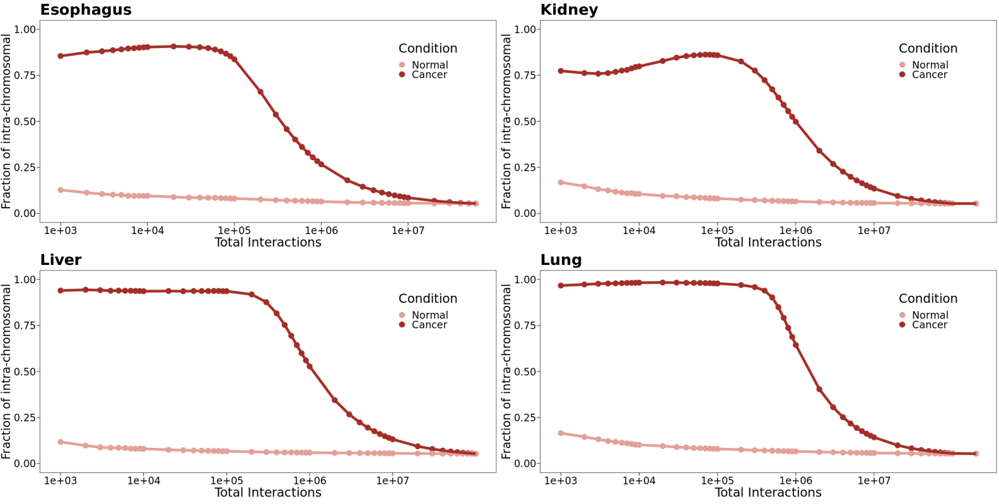
A diferentes cortes de valores más altos de IM, la fracción de pares intra-cromosómicos permanece estable en
tejidos normales, pero no en cáncer.
La prueba de Kolmogorov-Smirnov indica que la distribución de fracciones
intra- en los fenotipos es significativamente diferente hasta los 1e+6 valores más altos de IM.
En cáncer, las interacciones de co-expresión más fuertes son intra-cromosómicas
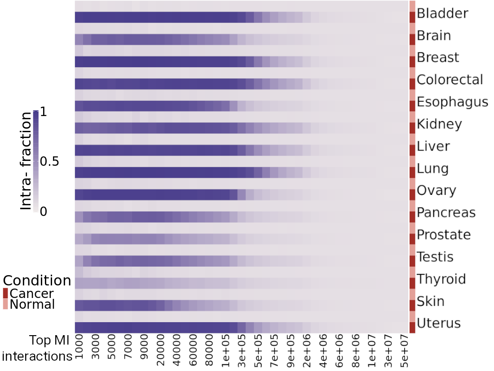
A diferentes cortes de valores más altos de IM, la fracción de pares intra-cromosómicos permanece estable en
tejidos normales, pero no en cáncer.
La prueba de Kolmogorov-Smirnov indica que la distribución de fracciones
intra- en los fenotipos es significativamente diferente hasta los 1e+6 valores más altos de IM.
En cáncer, hay un decaimiento de los valores de co-expresión que depende de la distancia entre pares de genes
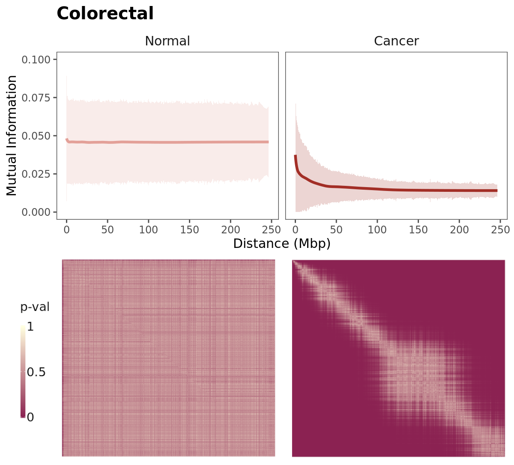
Los pares de genes se ordenaron en términos de su distancia y se observa el promedio de valores de IM para
conjuntos de mil interacciones.
Las redes de tejido de cáncer y normal tienen diferente estructura topológica
 Redes de co-expresión construidas con las 100 mil interacciones de IM más fuertes.
Redes de co-expresión construidas con las 100 mil interacciones de IM más fuertes.
Los genes están
coloreados de acuerdo al cromosoma en el cual se localizan.
La mayoría de interacciones en las redes de tejido normal son únicas
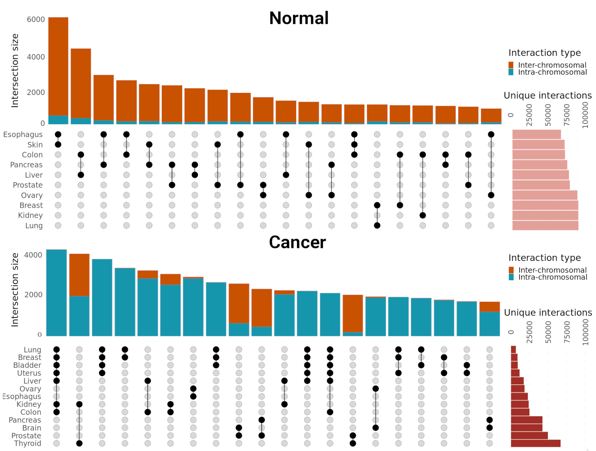
Veinte conjuntos con el mayor número de interacciones compartidas.
Las redes de tejido de cáncer tienen un
menor número de interacciones únicas que las de tejido normal.
Las intersección de las redes de interacciones compartidas contiene genes que codifican para
riboproteínas
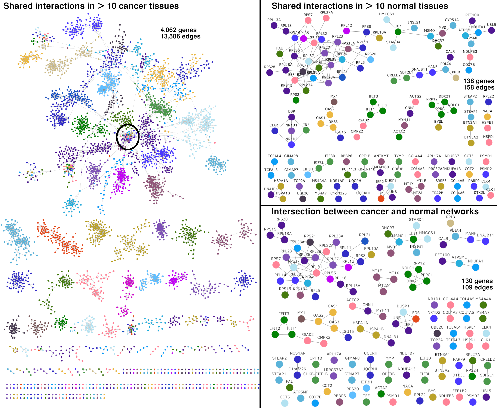
Los genes que codifican para proteínas ribosomales guardan un patrón de alta co-expresión
entre ellos
en todos los tejidos analizados y en ambas condiciones.
Análisis de redes
- Identificación de comunidades
-
Conjuntos de nodos que están más densamente conectados entre ellos que con el resto de la red.
-
Cálculo de asortatividad promedio por comunidad
- Tendencia de los nodos a conectarse con otros nodos con características similares.
- Asortatividad cromosomal: Para cuantificar la tendencia de una comunidad hacia un solo cromosoma.
- Asortatividad de expresión diferencial: Para cuantificar la tendencia de una comunidad hacia una dirección en
expresión diferencial.
-
Análisis de sobre-representación de procesos de Gene Ontology
- Para identificar procesos biológicos potencialmente asociados a cada comunidad.
Distribución de asortatividad cromosómica en las
comunidades de las redes
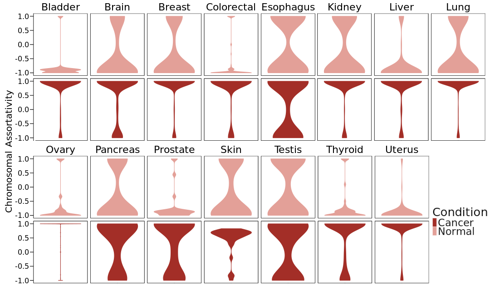
Esta característica resume el fenómeno:
en tejido normal hay una fuerte tendencia
hacia las interacciones inter-cromosómicas,
mientras que las comunidades
en redes de cáncer están compuestas principalmente por
interacciones intra-cromosómicas.
Procesos biológicos asociados a una sola condición
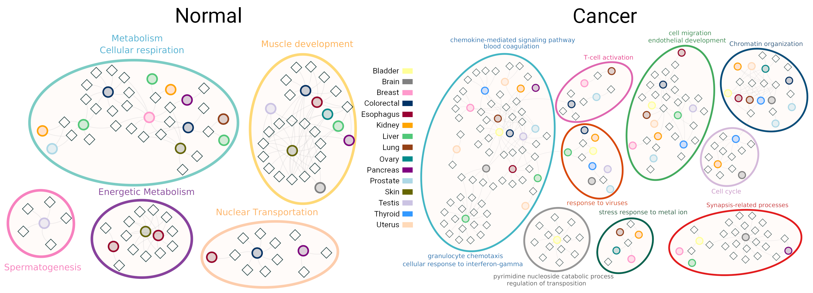
Red bipartita: comunidades - procesos de GO
Nombre de la comunidad: Gen con mayor valor de page-rank
Los procesos de GO asociados de forma única en las redes de tejido normal
son necesarios para el mantenimiento celular, mientras que en las redes de cáncer
hay procesos relacionados con carcinogénesis.
Ambas redes tienen términos asociados a un solo tejido: testis en la red normal y
cerebro en la red de cáncer.
La pérdida de co-expresión inter-cromosomal no se observa en otras enfermedades
crónico-degenerativas
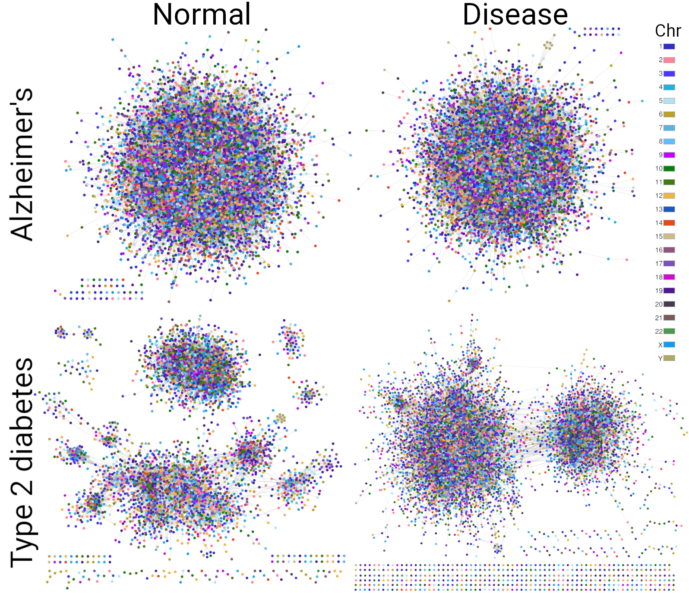
Redes con 100 mil interacciones construidas con la misma metodología.
Conclusiones
- La pérdida de co-expresión inter-cromosómica y la pérdida de co-expresión a larga distancia son características
consistentes, medibles y reproducibles, presentes en todos los fenotipos analizados.
-
Hay una alteración global en las interacciones de co-expresión en el transcriptoma.
-
Se prefieren distancias cortas .
-
Existe constribución de múltiples mecanismos de regulación trancripcional alterados.
-
Su prevalencia sugiere un signo distintivo con características habilitadoras en el programa transcripcional del cáncer.
¡Gracias!
diana_garciacortes@dfci.harvard.edu
Información Mutua
- Es una medida de dependencia estadística entre dos variables aleatorias.
- Expresa qué tanta información nos dice una variable sobre otra.
¿Qué tanto el conocer los valores de expresión
del gen A en el conjunto de mis muestras me ayuda para conocer los valores de expresión
del gen B?
- Reducción de incertidumbre de una variable aleatoria debido al conocimiento
debido al conocimiento del valor de otra variable.
Entropía
- En forma cualitativa, es una medida de incertidumbre.
- Caracteriza qué tan difícil de predecir es una variable aleatoria.
-
Aunque no solo se toman en cuenta los posibles valores, sino también su frecuencia
-
Un dado cargado donde 90% de las tiradas resulta en 2 tiene menor entropía
que un dado sin cargar.
Entropía
No es un concepto vago, tiene una deficinión matemá precisa:
Si una variable aleatoria $X$ toma valores en el conjunto
$\chi = {x_1, x_2, x_3, \dots ,x_n }$, entonces la entropía de la variable
aleatoria $X$ se calcula como
\[\begin{aligned}
H(X) = - \sum_{x \in \chi} P(x) \log P(x)
\end{aligned} \]
Si tomamos $\log$ en base 2, la entropía se expresa en bits.
Entropía
Pero estábamos hablando de dos variables.
Entropía conjunta: Calcular entropía sobre todos los posibles
pares de las variables aleatorias.
\[\begin{aligned}
H(X, Y) = - \sum_{x \in \chi} \sum_{y \in \psi} P(x,y) \log P(x,y)
\end{aligned} \]
Entropía condicional: La entropía de una variable aleatoria dada otra.
\[\begin{aligned}
H(X| Y) = - \sum_{x \in \chi} P(x) H(Y|X=x)
\end{aligned} \]
Entropía
Ambas están relacionadas por las siguientes igualdades
\[\begin{aligned}
H(X, Y) = H(X) + H(X|Y)
\end{aligned} \]
\[\begin{aligned}
H(X|Y) \neq H(Y|X)
\end{aligned} \]
\[\begin{aligned}
H(X) - H(X|Y) = H(Y) - H(Y|X)
\end{aligned} \]
Y esto es la información mutua
\[\begin{aligned}
I(X;Y) = H(Y) - H(Y|X) = H(Y) + H(X) - H(X|Y)
\end{aligned} \]
Reducción en la entropía
RNA-seq
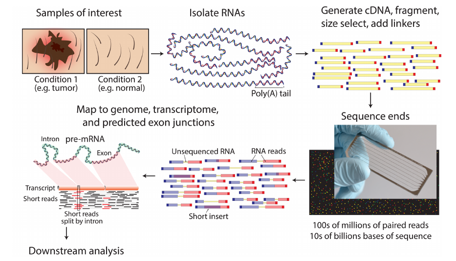
Griffith M, Walker JR, Spies NC, Ainscough BJ, Griffith OL (2015)
Informatics for RNA Sequencing:
A Web Resource for Analysis on the Cloud. PLoS Comput Biol 11(8):e1004393.
doi: 10.1371/journal.pcbi.1004393.
RNA-seq por Illumina
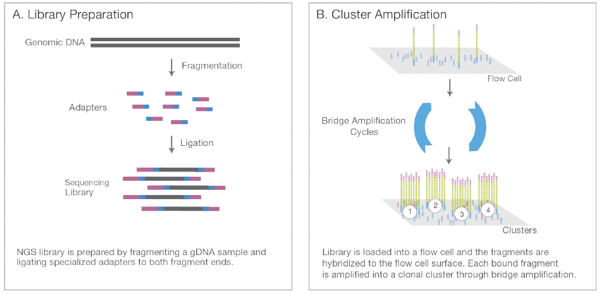
Illumina.
An introduction to Next-Generation Sequencing Technology
www.illumina.com/technology/next-generation-sequencing.html
RNA-seq por Illumina
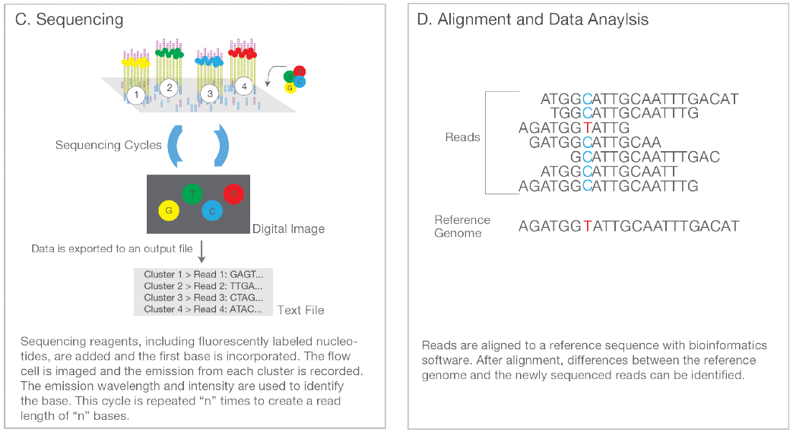
Illumina.
An introduction to Next-Generation Sequencing Technology
www.illumina.com/technology/next-generation-sequencing.html